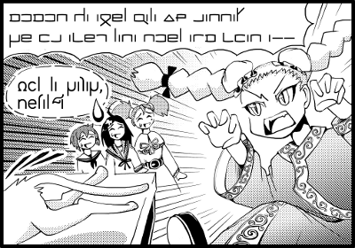

Sitemap
Contents Menu
Return
How to Use Dic.
How to Read Dic.
Arka in Manga
Frame 1 (prequel)
Frame 1 (sequel)
Frame 2
Frame 3
Frame 4
 The girl with twin-braids is "feel, the childish girl." She is wrapped in a robe called "teebe". "teebe" is also a uniform of our school. Pupils in the Raldura House like me often wears it. It's a bit strange that a pupil in another House wears it. "feel" has grown up in Arna City like miifa, and she is weird. She sees herself as the reincarnation of Kmiir, one of the heroine who was a member of Axet which saved the world against the demons. She has a complex about being short. She is a troublemaker, but she is the funniest girl of the four. Look at her face! Looks like she's gonna eat the cat! Oh, and the sentence is wirrten in another font. Here's the transcription. Romanized Arka feel: momon ca adel fala 85 sanna! re is axek lana noel atm xian a-- Well, what's "momon"? ...What?! A monster?! ---- momon ［monster］momon:the 85th constellation:Mars of Benefit 19:ridia/seren/mel:from its voice ---- Arbazard is in Atolas, and Atolas is another world. There are magic, gods, demons and monsters in Atolas. There's no monsters in our age, but there once were 100 kinds of monsters. "The 85th constellation" means that momon is the 85th monster. It's true that momons are a monster, but they don't harm people so that some people kept them as a pet. Ah, I want a momon. I wish I had one. "ca" means what? It's like "the"? "momon ca adel" is "momon, the monster"? ---- ca ［adjective］the ［adjective］indicates the following word is a proper noun. ［noun］asterisk 17:Established Arka:Old Arka:ca (emphasis) 【example】 varfant, ca freian varfant, the swordsman ---- "ca" is like "the." You can omit the mark "," (tsunk). "fala 85" means "85th." fala is a caser which means a number and order. And "sanna" is used to corfirm something. "momon ca adel fala 85 sanna!" means "You are momon, the 85th monster, aren't you?!" OK, feel thinks the cat is a monster. Now I understand she is weird. The next sentence is "re is axek lana noel atm xian a..." I've already learnt "re" on this lesson. It makes imperative sentences. And I've learnt "is" on this lesson. It means "to inactivate something." The object of the verb "is" is "axek" (metamorphosis). "is axek" means "to get back to the real body." There's no more nouns because we've already known the object is "axek." "lana" is a noun, but it can be a caser. the "lana" in the sentence is a caser; in order to do something. "noel" is "I," while "xian" is "you," the cat. "atm" means "to sell." Oh, she's gonna sell the cat? I guess so. haizen (bad karma!) What does the last word "a" mean? Oh, there are so many definitions for "a"! Most of "a" at the end of sentences is "a(4)" It's just an exclamatory word. ---- a(4) ［ending independence］exclamatory word Old Arka ---- You'd better use "e" instead of "a" when you're talking to somebody. However, The "a" in the sentence is not "a(4)" but a caser which means destinations. "atm a" means "to sell something to." ---- a ［caser］to、for 13:Established Arka:al 【example】 fit a lu. Give it to him. fit al an. Give it to me. ---- But I think casers need a noun. There's no nouns after the "a." To whom she's going to sell the cat, then? The sentence ends up with"--." The mark indicates the sentence ended before it was over. So we don't know to whom she is going to sell the cat. I mean, the buyer is omitted in the sentence. I see. That's why only the caser is left in the sentence. Then, "re is axek lana noel atm xian a..." means "Get back to your true shape so that I can sell you to..." feel believes the real identity of the cat is a monster. How weird she is! By the way, Alia, why are the three of them standing on the upper-left? They are overwhelmed at her weirdness. The last character is called "alis" which means anxiety of speakers. Romanized Arka dil la rakar, netal (alis "dil" is "to hinder." Then, where's the subject? I think Arka is an SVO language. You can omit subjects in imperative sentences. Oh, I remember now. "dil la" means "hinder her." I mean, they say "stop her!" "rakar" is "fanatical believer" and "la" is "s/he." Wait, there are two nouns in a row. Isn't it strange? ---- la ［pronoun］that person、he、she、that ［antonym］lu 13:arbitrary 【example】 la fian that girl ---- Uh... it's difficult to explain. You can use pronouns as adjectives or verbs in Arka. "la rakar" doesn't mean "she fanatical believer," but "that fanatical believer." I got it! And it seems you have to put "la" in front of nouns when it's used as an adjective. Most adjectives come after nouns in Arka, so "la" is a bit strange. And you have to put "tu (this)," "le (that)" and "lu (this person)" before nouns when you use them. "tu miik" means "this apple," while "le galt" does "that gate." And "lu fian" makes "this girl." You have to use "lu" or "la" when referring to living things. Why is it "la rakar," not "lu rakar"? "lu rakar" is OK. But "la lakar" is better. Do you know why? What is the difference between "lu" and "la," Shion? Distance, I think. "lu" means "this person" and "la" means "that person." The distance also means psychological distance. The three are overwhelmed at feel's weirdness. And that makes the mental distance, so they say "la rakar," not "lu rakar." Oh, I got it! The dictionary says the last word "netal" means "anybody" or "whoever." "dil la rakar, netal (alis" means "Anybody stop that fanatical believer!" But why do they call her a fanatic believer? Because there're no more monsters in our age. She believes in the myth. She is so religious as to think the cat is a monster. Now I understand the punch line. I'm surprised to know there're many things we can learn from a four-frame comic! You can learn not only the language but also the culture. And you're getting used to the dictionary. I think mangas are a good text. Read the other stories of "The Diary of a Cat" when you have time. "The Diary of a Cat" It has 21 stories?! It means thre're 20 more mangas! They must be good exercises. There're many pronouns in Arka like "non" or "noel," but I'll get used to them while reading. Well, I believe that the readers in front of the PC got used to consult the dictionary. You'll be able to understand any sentences if you read them as Shion and I did, so please make use of the dictionary. Now Lein's Lesson 2 is over. Thank you! And thanks to all the readers! You must be tired, Shion, Alia. I've baked a tube cake for you, so turn the PC off. Yay!